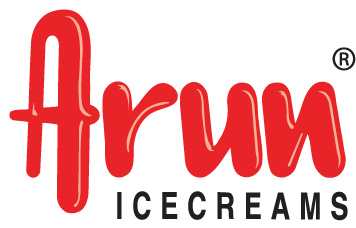

- About Us
- Media
- Contact Us


Arun Icecreams is probably the most well known Hatsun brand. When other ice cream brands opened parlours
exclusively in the city, Arun decided to take to suburban and even rural areas, leading the ice cream into the hearts of
millions. Arun caters to different people with different tastes with a whole range of ice cream bars exclusively for kids and
novel ice cream flavours like indian sweets. The brand also consistently introduces new flavours every season, just to
make sure customers have something fresh to look forward to every time they walk in to an Arun Icecreams parlour.